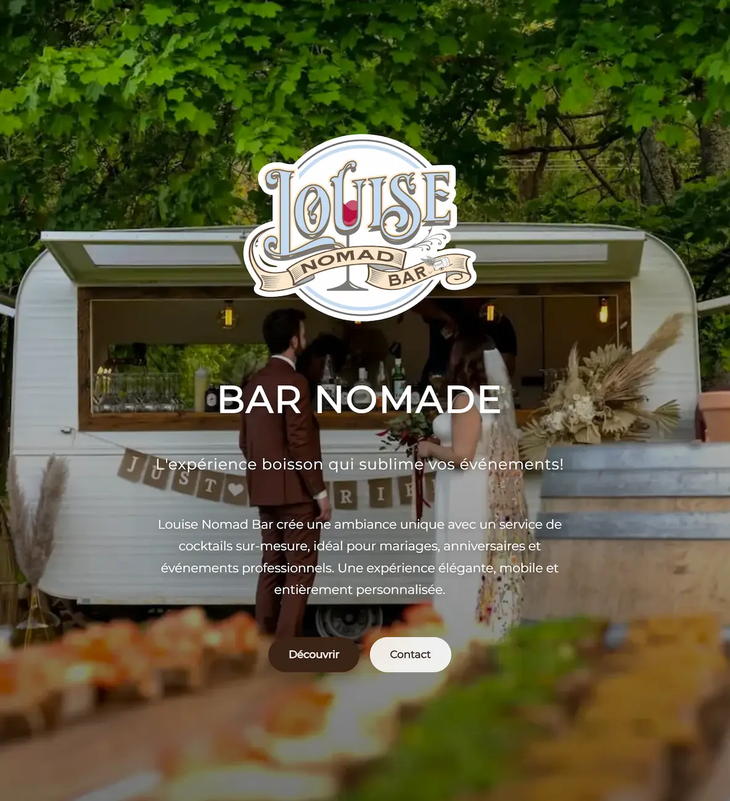

Louise Nomad Bar
Bar nomade pour événements privés et professionnels
- Objectif : rassurer et générer des demandes qualifiées
- Ce qui a été fait : message recentré + sections utiles + CTA visibles
- Résultat : site fluide, compris rapidement, orienté contact